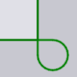

Hoekbehandeling

Het venster Corner Treatment wordt gebruikt om verschillende types uit te voeren van speciale hantering bij scherpe hoeken van een lasersnede. Dit venster is toegankelijk door te klikken in de buurt van een hoek van een lasersnede.
-
Auto compute: wanneer de instelling voor automatisch berekenen is ingeschakeld (de standaardinstelling), berekent TecZone Laser een geschikte hoekbewerking op basis van de machine, gebruikte LTT en het hoekprofiel. Als u de hoekbehandeling wilt bewerken, moet u dit uitschakelen.
-
Treatment: het type hoekbehandeling (zie de tabel hieronder voor meer informatie). Sommige behandelingsmethoden hebben een parameter (zoals straal of tijd die wordt gebruikt om het hoekproces te regelen).
-
Radius of Time (sec): sommige behandelingen (zoals Rounding en Looping) hebben een straal nodig als invoer. Sommige zoals Dwell en Cool hebben een vertragingstijd nodig.
-
De keuzeschakelaars onderaan dit venster kunnen worden gebruikt om de set van geselecteerde hoeken uit te breiden zodat ze allemaal samen kunnen worden bewerkt:
-
Similar on this contour: als u klikt hierop klikt, worden alle hoeken in deze contour een vergelijkbare hoek hebben als de geselecteerde gemarkeerd met kleine blauwe kruisen. Dan zullen alle bewerkingen die u uitvoert op al deze hoeken worden toegepast.[1]
-
All on this contour: zoals de keuzeschakelaar hierboven, maar selecteert alle hoeken van deze contour, ongeacht de hoek.
-
Similar on all contours: selecteert alle vergelijkbare hoeken (dezelfde hoek) van alle uitgeruste contouren van het stuk, zodat ze allemaal parallel kunnen worden bewerkt.
-
Behandelingsmethoden
De onderstaande tabel toont de verschillende hoekbehandelingsmethoden. De Rounding en Looping methoden wijzigen de geometrie van de snede zichtbaar, terwijl de andere methoden een klein pictogram bij de hoek toevoegen om de soort bewerking die daar plaatsvindt aan te duiden.
| Behandeling | Uitleg | Voorbeeld |
|---|---|---|
Do nothing |
Geen hoekbewerking uitgevoerd |
|
Rounding |
Rondingen op de hoeken |
|
Looping |
Lussen op de hoeken |
 |
Dwell |
Stilstaan op de hoeken |
|
Cool |
De laser afkoelen op de hoeken |
|
Stop |
Stoppen op de hoek |
|
Slowdown |
De laser vertragen op de hoeken |
|